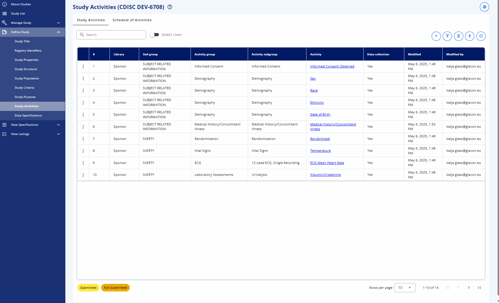

Study Creation Demonstration¶
(created 2025-04-29 using v0.14)
This demonstration provides a step-by-step guide on how to create a study. For this purpose, we can use the CDISC Pilot Study as an example. The corresponding clinical protocol is available here. Alternatively, we can utilize the USDM (Unified Study Definitions Model) representation of the study. An example of the USDM 3.0 representation of this protocol is available. The Excel USDM file, created by data4knowledge, can be accessed here (file dated 12 November 2024).
Create Study¶
To begin, we need to create a new study that will belong to a project specific to a clinical program. The study requires a study number and an acronym, both of which can be customized. By default, the study number has a maximum length of 4 characters, but this can be adjusted in the Settings menu (accessible from the top-right corner).
We will create a new study with the following details:
- Project: CDISC DEV
- Study Number: 6708
- Acronym: LZZT

Manage Study¶
The Manage Study view allows you to maintain its versions, subparts, protocol versions (planned for future updates), and applicable data standards. Core attributes such as the study name, acronym, clinical program, and project are displayed to show the study's context.
In the Study Status area, you can lock the study to create a new main version or unlock it to enable editing. This feature ensures proper version control and traceability. For complex studies, multiple subparts can be managed through the Study Subparts area. As an example, many Phase 1 studies utilize subparts due to the complexity of their schedules of activities.
Although protocol version management is not yet implemented, it is planned for future updates.
Another aspect of study management is defining the applicable standards. The Data Standards Versions section allows you to link controlled terminology and other standards from specific version to the study. Controlled terminology typically involves a combination of a specific CDISC standard version and a corresponding sponsor standard version for packages like SDTM, ADaM, or CDASH. These standards are expected to be managed in the library and can be selected as needed. This linkage impacts on the concrete terminology used as the linked version is fixes the values.
The Dictionaries and Data Exchange standards are also intended to link to specific versions, but this functionality is still under development.
Define Study¶
The most important section to create the study content is the Define Study section.
Study Epochs (Structure)¶
The different study epochs can be defined in this area.
There are four different types of epochs:
- Pre-treatment: The period before the treatment phase, during which subjects may undergo additional evaluations or assessments to establish a baseline for comparison with post-treatment data.
- Treatment: The period during which subjects receive the study treatment or intervention.
- No-Treatment: The period during which subjects do not receive any treatment or intervention, often used for comparison with the treatment group.
- Post-treatment: The period after the treatment phase, during which subjects are monitored for any long-term effects or outcomes of the treatment.
For each epoch type, there are also various sub-types available. For example, the Screening sub-type is available for the Pre-treatment epoch. The sub-type is based on a CDISC codelist to ensure consistency and compliance.
Study Visits (Structure)¶
The Study Visits section allows you to define the visits for the study. There are different visit types available. Visits are anchored and relative to other visits. This "anchoring" helps maintain the relationship between visits. Detailed options and functionality related to visits are described in the system documentation here.
In general, the "Scheduled Visit" is the most commonly used type. Typically, you would define one anchoring visit first, which is usually the first treatment visit. Afterward, you can create additional visits by linking them to the anchor visit and specifying their respective window days.

Study Activities¶
The Schedule of Activities (SoA) is a crucial part of the study design. It outlines the activities that will be performed during each visit. The SoA is defined in the Study Activities section, where you can assign activities and associate them to visits.
When a study activity should be added, ideally activities from the library or another study should be used. It is also possible to request a new activity request which needs to be processed by a standards developer. It is easy to assign multiple activities at once by selecting the tickbox for each activity. The search could be used to filter the activities, select the corresponding one, search for the next and so on. For the grouping it makes sense to assign them either all to one group and change other later on or to add the bunch of activities of one group and then continue with the next group.

As a next step, the activities need to be assigned to the corresponding visit. This can be done in the "Schedule of Activities" tab. The "Detailed" view allows editing whereas the "Protocol" shows the view of the SoA for the protocol. On the detailed view, all groupings can be explanded by clicking the "Expand table" toggle. With the eye symbol, the grouping and activity names can either be hidden or shown. The tickmarks can be used to assign the activities to the corresponding visit.

Data Specifications¶
When the activities are specified, the concrete data specifications for these can be defined. These specifications are concepts that are connected to data definitions, such as the domains they belong to and the additional attributes associated with them. In the future, these will also be linked to CRF items and forms, allowing the CRF as required by the Schedule of Activities to be automatically generated.
When navigating to the "Data Specifications" area for the first time, the system will automatically link recommendations for activity instances to the available activities. If no corresponding activity instance is available, an "Action needed" flag is displayed instead. It is recommended to review the activity instance. For example, for "Glucose," it might be collected as either a numeric or categorical value.